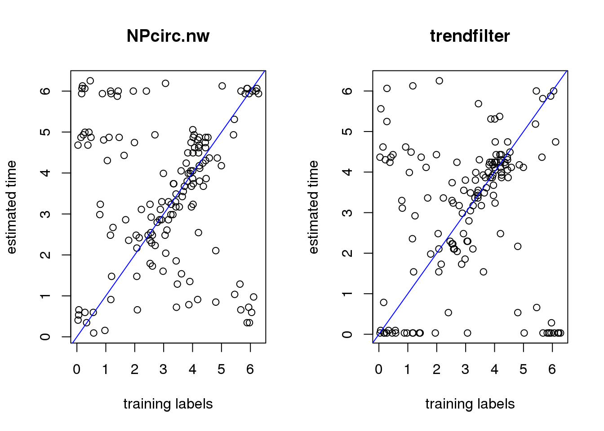
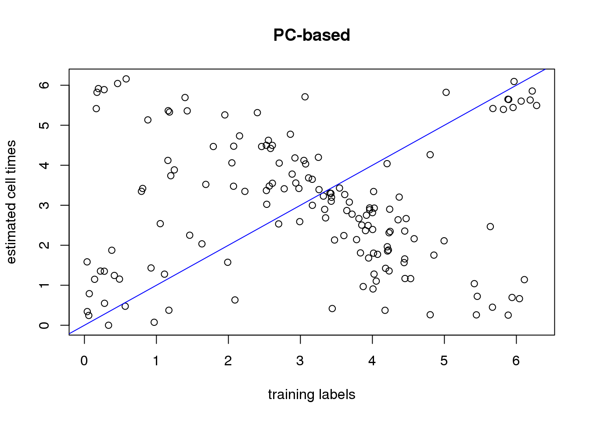

Last updated: 2018-06-24
Code version: afe6aa6
library(Biobase)
df <- readRDS(file="../data/eset-final.rds")
pdata <- pData(df)
fdata <- fData(df)
# select endogeneous genes
counts <- exprs(df)[grep("ENSG", rownames(df)), ]
log2cpm.all <- t(log2(1+(10^6)*(t(counts)/pdata$molecules)))
#macosko <- readRDS("data/cellcycle-genes-previous-studies/rds/macosko-2015.rds")
counts <- counts[,order(pdata$theta)]
log2cpm.all <- log2cpm.all[,order(pdata$theta)]
pdata <- pdata[order(pdata$theta),]
log2cpm.quant <- readRDS("../output/npreg-trendfilter-quantile.Rmd/log2cpm.quant.rds")
# select external validation samples
set.seed(99)
nvalid <- round(ncol(log2cpm.quant)*.15)
ii.valid <- sample(1:ncol(log2cpm.quant), nvalid, replace = F)
ii.nonvalid <- setdiff(1:ncol(log2cpm.quant), ii.valid)
log2cpm.quant.nonvalid <- log2cpm.quant[,ii.nonvalid]
log2cpm.quant.valid <- log2cpm.quant[,ii.valid]
theta <- pdata$theta
names(theta) <- rownames(pdata)
# theta.nonvalid <- theta_moved[ii.nonvalid]
theta.nonvalid <- theta[ii.nonvalid]
theta.valid <- theta[ii.valid]
sig.genes <- readRDS("../output/npreg-trendfilter-quantile.Rmd/out.stats.ordered.sig.101.rds")
expr.sig <- log2cpm.quant.nonvalid[rownames(log2cpm.quant.nonvalid) %in% rownames(sig.genes)[1:10], ]
# get predicted times
# set training samples
source("../peco/R/primes.R")
source("../peco/R/partitionSamples.R")
parts <- partitionSamples(1:ncol(log2cpm.quant.nonvalid), runs=5,
nsize.each = rep(151,5))
part_indices <- parts$partitionsFitting
source("../peco/R/fit.cyclical.R")
source("../peco/R/cycle.npreg.R")
source("../code/utility.R")fits.nw <- vector("list", 5)
for (run in 1:5) {
print(run)
# fitting training data
Y_train <- expr.sig[,part_indices[[run]]$train]
theta_train <- theta.nonvalid[part_indices[[run]]$train]
fit.train <- cycle.npreg.insample(Y = Y_train,
theta = theta_train,
ncores=15,
method.trend="npcirc.nw")
# fitting test data
Y_test <- expr.sig[,part_indices[[run]]$test]
theta_test <- theta.nonvalid[part_indices[[run]]$test]
fit.test <- cycle.npreg.outsample(Y_test=Y_test,
sigma_est=fit.train$sigma_est,
funs_est=fit.train$funs_est,
method.grid = "uniform",
method.trend="npcirc.nw",
ncores=15)
fits.nw[[run]] <- list(fit.train=fit.train,
fit.test=fit.test)
}
saveRDS(fits.nw, file = "../output/method-train-classifiers-top10.Rmd/fits.nw.rds")
fits.trend2 <- vector("list", 5)
for (run in 1:5) {
print(run)
# fitting training data
Y_train <- expr.sig[,part_indices[[run]]$train]
theta_train <- theta.nonvalid[part_indices[[run]]$train]
fit.train <- cycle.npreg.insample(Y = Y_train,
theta = theta_train,
polyorder=2,
ncores=15,
method.trend="trendfilter")
# fitting test data
Y_test <- expr.sig[,part_indices[[run]]$test]
theta_test <- theta.nonvalid[part_indices[[run]]$test]
fit.test <- cycle.npreg.outsample(Y_test=Y_test,
sigma_est=fit.train$sigma_est,
funs_est=fit.train$funs_est,
method.grid = "uniform",
method.trend="trendfilter",
polyorder=2,
ncores=15)
fits.trend2[[run]] <- list(fit.train=fit.train,
fit.test=fit.test)
}
saveRDS(fits.trend2, file = "../output/method-train-classifiers-top10.Rmd/fits.trend2.rds")load results
fits.nw <- readRDS(file = "../output/method-train-classifiers-top10.Rmd/fits.nw.rds")
fits.trend2 <- readRDS(file = "../output/method-train-classifiers-top10.Rmd/fits.trend2.rds")Compute metrics
xy_time <- lapply(1:5, function(run) {
xy <- data.frame(
ref_time=theta.nonvalid[part_indices[[run]]$test],
pred_time_nw=fits.nw[[run]]$fit.test$cell_times_est[
match(names(theta.nonvalid[part_indices[[run]]$test]),
names(fits.nw[[run]]$fit.test$cell_times_est))],
pred_time_trend2=fits.trend2[[run]]$fit.test$cell_times_est[
match(names(theta.nonvalid[part_indices[[run]]$test]),
names(fits.trend2[[run]]$fit.test$cell_times_est))],
dapi=pdata$gfp.median.log10sum.adjust[match(names(theta.nonvalid[part_indices[[run]]$test]),
rownames(pdata))])
return(xy)
})
for (i in 1:5) {
xy_time[[i]]$diff_time_nw <- pmin(
abs(xy_time[[i]]$pred_time_nw-xy_time[[i]]$ref_time),
abs(xy_time[[i]]$pred_time_nw-(2*pi-xy_time[[i]]$ref_time)))
xy_time[[i]]$diff_time_trend2 <- pmin(
abs(xy_time[[i]]$pred_time_trend2-xy_time[[i]]$ref_time),
abs(xy_time[[i]]$pred_time_trend2-(2*pi-xy_time[[i]]$ref_time)))
}
mean(sapply(xy_time, function(x) mean(x$diff_time_trend2))/2/pi)[1] 0.08709222mean(sapply(xy_time, function(x) mean(x$diff_time_nw))/2/pi)[1] 0.08543463Circular rank correlation
# source("../peco/R/cycle.corr.R")
# corrs.rank <- lapply(1:5, function(i) {
# data.frame(cbind(nw=rFLRank.IndTestRand(xy_time[[i]]$ref_time, xy_time[[i]]$pred_time_nw),
# trend2=rFLRank.IndTestRand(xy_time[[i]]$ref_time, xy_time[[i]]$pred_time_trend2)),
# nw.trend2=rFLRank.IndTestRand(xy_time[[i]]$pred_time_nw, xy_time[[i]]$pred_time_trend2))
# })
#
# mean(sapply(1:5, function(i) corrs.rank[[i]]$trend2[1]))
# sd(sapply(1:5, function(i) corrs.rank[[i]]$trend2[1]))
#
# mean(sapply(1:5, function(i) corrs.rank[[i]]$nw[1]))
# sd(sapply(1:5, function(i) corrs.rank[[i]]$nw[1]))
#
# mean(sapply(1:5, function(i) corrs.rank[[i]]$nw.trend2[1]))
# sd(sapply(1:5, function(i) corrs.rank[[i]]$nw.trend2[1]))PVE
source("../peco/R/utility.R")
nw <- sapply(1:5, function(i) get.pve(with(xy_time[[i]],dapi[order(pred_time_nw)])))
trend2 <- sapply(1:5, function(i) get.pve(with(xy_time[[i]],dapi[order(pred_time_trend2)])))
save(nw, trend2,
file="../output/method-train-classifiers-top10.Rmd/pve.methods.rda")load(file="../output/method-train-classifiers-top10.Rmd/pve.methods.rda")
cbind(mean(trend2),sd(trend2)) [,1] [,2]
[1,] 0.2979458 0.09333073cbind(mean(nw),sd(nw)) [,1] [,2]
[1,] 0.3073049 0.05656022plots
Y_test <- expr.sig[,part_indices[[1]]$test]
theta_test <- theta.nonvalid[part_indices[[1]]$test]
time_nw <- fits.nw[[1]]$fit.test$cell_times_est[match(names(theta_test),
names(fits.nw[[1]]$fit.test$cell_times_est))]
time_trend2 <- fits.trend2[[1]]$fit.test$cell_times_est[match(names(theta_test),
names(fits.trend2[[1]]$fit.test$cell_times_est))]
par(mfrow=c(1,2))
plot(theta_test, time_nw,
ylab="estimated time",
xlab="training labels", main = "NPcirc.nw")
abline(0,1, col="blue")
plot(theta_test, time_trend2,
ylab="estimated time",
xlab="training labels", main = "trendfilter")
abline(0,1, col="blue")
library(circular)
source("../peco/R/cycle.corr.R")
for (i in 1:5) {
ref_time <- theta.nonvalid[part_indices[[i]]$test]
expr_sub <- expr.sig[,part_indices[[i]]$test]
pc_expr <- prcomp(t(expr_sub), scale=T)
pred_time_pc_expr <- as.numeric(coord2rad(cbind(pc_expr$x[,1],pc_expr$x[,2])))
#plot(pred_time_pc_expr, ref_time)
pred_time_pc_expr_shift <- rotation(ref_time, pred_time_pc_expr)$y2shift
names(pred_time_pc_expr_shift) <- colnames(expr_sub)
xy_time[[i]]$pred_time_pc <- pred_time_pc_expr_shift
}
for (i in 1:5) {
xy_time[[i]]$diff_time_pc <- pmin(
abs(xy_time[[i]]$pred_time_pc-xy_time[[i]]$ref_time),
abs(xy_time[[i]]$pred_time_pc-(2*pi-xy_time[[i]]$ref_time)))
}
mean(sapply(xy_time, function(x) mean(x$diff_time_pc)))/2/pi[1] 0.09441778source("../peco/R/utility.R")
source("../peco/R/fit.trendfilter.generic.R")
pc_pve <- sapply(xy_time, function(x) get.pve(x$dapi[order(x$pred_time_pc)]))Fold 1 ... Fold 2 ... Fold 3 ... Fold 4 ... Fold 5 ...
Fold 1 ... Fold 2 ... Fold 3 ... Fold 4 ... Fold 5 ...
Fold 1 ... Fold 2 ... Fold 3 ... Fold 4 ... Fold 5 ...
Fold 1 ... Fold 2 ... Fold 3 ... Fold 4 ... Fold 5 ...
Fold 1 ... Fold 2 ... Fold 3 ... Fold 4 ... Fold 5 ... mean(pc_pve)[1] 0.3004975sd(pc_pve)[1] 0.03044726par(mfrow=c(1,1))
plot(xy_time[[1]]$ref_time,
xy_time[[1]]$pred_time_pc,
xlab="training labels",
ylab="estimated cell times", main="PC-based")
abline(0,1, col="blue")
# get predicted times
# set training samples
source("../peco/R/primes.R")
source("../peco/R/partitionSamples.R")
source("../peco/R/fit.cyclical.R")
source("../peco/R/cycle.npreg.R")
source("../peco/R/utility.R")
# select external validation samples
set.seed(99)
nvalid <- round(ncol(log2cpm.quant)*.15)
ii.valid <- sample(1:ncol(log2cpm.quant), nvalid, replace = F)
ii.nonvalid <- setdiff(1:ncol(log2cpm.quant), ii.valid)
log2cpm.quant.nonvalid <- log2cpm.quant[,ii.nonvalid]
log2cpm.quant.valid <- log2cpm.quant[,ii.valid]
theta <- pdata$theta
names(theta) <- rownames(pdata)
# theta.nonvalid <- theta_moved[ii.nonvalid]
theta.nonvalid <- theta[ii.nonvalid]
theta.valid <- theta[ii.valid]
sig.genes <- readRDS("../output/npreg-trendfilter-quantile.Rmd/out.stats.ordered.sig.101.rds")
expr.sig <- log2cpm.quant.nonvalid[rownames(log2cpm.quant.nonvalid) %in% rownames(sig.genes)[1:10], ]Fitting
source("../peco/R/unsupervised.R")
source("../peco/R/cycle.npreg.R")
source("../peco/R/fit.cyclical.R")
fit.nw.unsup.split <- vector("list", 5)
for (run in 1:5) {
print(run)
# fitting training data
# fitting test data
theta_test <- theta.nonvalid[part_indices[[run]]$test]
Y_test <- expr.sig[,part_indices[[run]]$test]
theta_initial <- initialize_grids(Y_test, method.grid="pca")
names(theta_initial) <- colnames(Y_test)
fit.nw.unsup.split[[run]] <- cycle.npreg.unsupervised(Y=Y_test, theta=theta_initial,
ncores=15,
method.trend="npcirc.nw",
maxiter=30, verbose=TRUE, tol=1)
fit.nw.unsup.split[[run]]$ref_time <- theta_test
fit.nw.unsup.split[[run]]$cell_times_est_shift <- with(fit.nw.unsup.split[[run]],
rotation(ref_time, cell_times_est[match(names(cell_times_est),
names(ref_time))])$y2shift)
fit.nw.unsup.split[[run]]$diff_time <- with(fit.nw.unsup.split[[run]],
pmin(abs(cell_times_est_shift-ref_time),
abs(cell_times_est_shift-(2*pi-ref_time))))
}
saveRDS(fit.nw.unsup.split, "../output/method-train-classifiers-top10.Rmd/fit.nw.unsup.split.rds" )
### bspline
fit.bspline.unsup.split <- vector("list", 5)
for (run in 1:5) {
print(run)
# fitting training data
# fitting test data
theta_test <- theta.nonvalid[part_indices[[run]]$test]
Y_test <- expr.sig[,part_indices[[run]]$test]
theta_initial <- initialize_grids(Y_test, method.grid="pca")
names(theta_initial) <- colnames(Y_test)
fit.bspline.unsup.split[[run]] <- cycle.npreg.unsupervised(Y=Y_test, theta=theta_initial,
ncores=15,
method.trend="bspline",
maxiter=30, verbose=TRUE, tol=1)
fit.bspline.unsup.split[[run]]$ref_time <- theta_test
fit.bspline.unsup.split[[run]]$cell_times_est_shift <- with(fit.bspline.unsup.split[[run]],
rotation(ref_time, cell_times_est[match(names(cell_times_est),
names(ref_time))])$y2shift)
fit.bspline.unsup.split[[run]]$diff_time <- with(fit.bspline.unsup.split[[run]],
pmin(abs(cell_times_est_shift-ref_time),
abs(cell_times_est_shift-(2*pi-ref_time))))
}
saveRDS(fit.bspline.unsup.split,
"../output/method-train-classifiers-top10.Rmd/fit.bspline.unsup.split.rds")
### loess
fit.loess.unsup.split <- vector("list", 5)
for (run in 1:5) {
print(run)
# fitting training data
# fitting test data
theta_test <- theta.nonvalid[part_indices[[run]]$test]
Y_test <- expr.sig[,part_indices[[run]]$test]
theta_initial <- initialize_grids(Y_test, method.grid="pca")
names(theta_initial) <- colnames(Y_test)
fit.loess.unsup.split[[run]] <- cycle.npreg.unsupervised(Y=Y_test, theta=theta_initial,
ncores=15,
method.trend="loess",
maxiter=30, verbose=TRUE, tol=1)
fit.loess.unsup.split[[run]]$ref_time <- theta_test
fit.loess.unsup.split[[run]]$cell_times_est_shift <- with(fit.loess.unsup.split[[run]],
rotation(ref_time, cell_times_est[match(names(cell_times_est),
names(ref_time))])$y2shift)
fit.loess.unsup.split[[run]]$diff_time <- with(fit.loess.unsup.split[[run]],
pmin(abs(cell_times_est_shift-ref_time),
abs(cell_times_est_shift-(2*pi-ref_time))))
}
saveRDS(fit.loess.unsup.split,
"../output/method-train-classifiers-top10.Rmd/fit.loess.unsup.split.rds")
fit.trend2.unsup.split <- vector("list", 5)
for (run in 1:5) {
print(run)
# fitting training data
# fitting test data
theta_test <- theta.nonvalid[part_indices[[run]]$test]
Y_test <- expr.sig[,part_indices[[run]]$test]
theta_initial <- initialize_grids(Y_test, method.grid="pca")
names(theta_initial) <- colnames(Y_test)
fit.trend2.unsup.split[[run]] <- cycle.npreg.unsupervised(Y=Y_test, theta=theta_initial,
ncores=15,
method.trend="trendfilter",
polyorder=2,
maxiter=30, verbose=TRUE, tol=1)
fit.trend2.unsup.split[[run]]$ref_time <- theta_test
fit.trend2.unsup.split[[run]]$cell_times_est_shift <- with(fit.trend2.unsup.split[[run]],
rotation(ref_time, cell_times_est[match(names(cell_times_est),
names(ref_time))])$y2shift)
fit.trend2.unsup.split[[run]]$diff_time <- with(fit.trend2.unsup.split[[run]],
pmin(abs(cell_times_est_shift-ref_time),
abs(cell_times_est_shift-(2*pi-ref_time))))
}
saveRDS(fit.trend2.unsup.split,
"../output/method-train-classifiers-top10.Rmd/fit.trend2.unsup.split.rds")fit.nw.unsup.split <- readRDS("../output/method-train-classifiers-top10.Rmd/fit.nw.unsup.split.rds")
fit.trend2.unsup.split <- readRDS("../output/method-train-classifiers-top10.Rmd/fit.trend2.unsup.split.rds")
fit.bspline.unsup.split <- readRDS("../output/method-train-classifiers-top10.Rmd/fit.bspline.unsup.split.rds")
fit.loess.unsup.split <- readRDS("../output/method-train-classifiers-top10.Rmd/fit.loess.unsup.split.rds")
xy_time_unsup <- lapply(1:5, function(i) {
data.frame(ref_time=fit.nw.unsup.split[[i]]$ref_time,
pred_time_nw=with(fit.nw.unsup.split[[i]], cell_times_est_shift[
match(names(ref_time),names(cell_times_est_shift))]),
pred_time_bspline=with(fit.bspline.unsup.split[[i]], cell_times_est_shift[
match(names(ref_time),names(cell_times_est_shift))]),
pred_time_loess=with(fit.loess.unsup.split[[i]], cell_times_est_shift[
match(names(ref_time),names(cell_times_est_shift))]),
pred_time_trend2=with(fit.trend2.unsup.split[[i]], cell_times_est_shift[
match(names(ref_time),names(cell_times_est_shift))]),
diff_time_nw=with(fit.nw.unsup.split[[i]], diff_time[
match(names(ref_time),names(diff_time))]),
diff_time_bspline=with(fit.bspline.unsup.split[[i]], diff_time[
match(names(ref_time),names(diff_time))]),
diff_time_loess=with(fit.loess.unsup.split[[i]], diff_time[
match(names(ref_time),names(diff_time))]),
diff_time_trend2=with(fit.trend2.unsup.split[[i]], diff_time[
match(names(ref_time),names(diff_time))]),
dapi=pdata$dapi.median.log10sum.adjust[
match(names(fit.nw.unsup.split[[i]]$ref_time),rownames(pdata))] ) })
mean(sapply(1:5, function(i) mean(xy_time_unsup[[i]]$diff_time_trend2)))/(2*pi)[1] 0.1147119mean(sapply(1:5, function(i) mean(xy_time_unsup[[i]]$diff_time_nw)))/(2*pi)[1] 0.1049372mean(sapply(1:5, function(i) mean(xy_time_unsup[[i]]$diff_time_bspline)))/(2*pi)[1] 0.1112207mean(sapply(1:5, function(i) mean(xy_time_unsup[[i]]$diff_time_loess)))/(2*pi)[1] 0.1543421PVE
source("../peco/R/utility.R")
pve.split.nw <- sapply(1:5, function(i) get.pve(with(xy_time_unsup[[i]],
dapi[order(pred_time_nw)])))
pve.split.trend2 <- sapply(1:5, function(i) get.pve(with(xy_time_unsup[[i]],
dapi[order(pred_time_trend2)])))
pve.split.bspline <- sapply(1:5, function(i) get.pve(with(xy_time_unsup[[i]],
dapi[order(pred_time_bspline)])))
pve.split.loess <- sapply(1:5, function(i) get.pve(with(xy_time_unsup[[i]],
dapi[order(pred_time_loess)])))
save(pve.split.nw, pve.split.trend2, pve.split.bspline, pve.split.loess,
file="../output/method-train-classifiers-top10.Rmd/pve.methods.unsupervised.split.rda")load(file="../output/method-train-classifiers-top10.Rmd/pve.methods.unsupervised.split.rda")
c(mean(pve.split.nw),
mean(pve.split.trend2),
mean(pve.split.bspline),
mean(pve.split.loess))[1] 0.10589164 0.09346032 0.14290239 0.17293893c(sd(pve.split.nw),
sd(pve.split.trend2),
sd(pve.split.bspline),
sd(pve.split.loess))[1] 0.08586656 0.08136004 0.06652973 0.12727674source("../peco/R/cycle.corr.R")
corrs_rank <- lapply(1:5, function(i) {
data.frame(cbind(
nw=rFLRank.IndTestRand(xy_time[[i]]$ref_time, xy_time[[i]]$pred_time_nw),
trend2=rFLRank.IndTestRand(xy_time[[i]]$ref_time, xy_time[[i]]$pred_time_trend2),
pc=rFLRank.IndTestRand(xy_time[[i]]$ref_time, xy_time[[i]]$pred_time_pc),
nwunsup=rFLRank.IndTestRand(xy_time[[i]]$ref_time,
xy_time_unsup[[i]]$pred_time_nw),
trend2unsup=rFLRank.IndTestRand(xy_time[[i]]$ref_time,
xy_time_unsup[[i]]$pred_time_trend2),
bsplineunsup=rFLRank.IndTestRand(xy_time[[i]]$ref_time,
xy_time_unsup[[i]]$pred_time_bspline),
loessunsup=rFLRank.IndTestRand(xy_time[[i]]$ref_time,
xy_time_unsup[[i]]$pred_time_loess),
nw.trend2=rFLRank.IndTestRand(xy_time[[i]]$pred_time_nw,
xy_time[[i]]$pred_time_trend2),
nw.pc=rFLRank.IndTestRand(xy_time[[i]]$pred_time_nw,
xy_time[[i]]$pred_time_pc),
nw.nwunsup=rFLRank.IndTestRand(xy_time[[i]]$pred_time_nw,
xy_time_unsup [[i]]$pred_time_nw),
nw.trend2unsup=rFLRank.IndTestRand(xy_time[[i]]$pred_time_nw,
xy_time_unsup [[i]]$pred_time_trend2),
nw.bsplineunsup=rFLRank.IndTestRand(xy_time[[i]]$pred_time_nw,
xy_time_unsup [[i]]$pred_time_bspline),
nw.loessunsup=rFLRank.IndTestRand(xy_time[[i]]$pred_time_nw,
xy_time_unsup [[i]]$pred_time_loess),
trend2.pc=rFLRank.IndTestRand(xy_time[[i]]$pred_time_trend2,
xy_time[[i]]$pred_time_pc),
trend2.nwunsup=rFLRank.IndTestRand(xy_time[[i]]$pred_time_trend2,
xy_time_unsup[[i]]$pred_time_nw),
trend2.trend2unsup=rFLRank.IndTestRand(xy_time[[i]]$pred_time_trend2,
xy_time_unsup[[i]]$pred_time_trend2),
trend2.bsplineunsup=rFLRank.IndTestRand(xy_time[[i]]$pred_time_trend2,
xy_time_unsup[[i]]$pred_time_bspline),
trend2.loessunsup=rFLRank.IndTestRand(xy_time[[i]]$pred_time_trend2,
xy_time_unsup[[i]]$pred_time_loess) ))
})
saveRDS(corrs_rank, "../output/method-train-classifiers.Rmd/corrs_rank.rds")sessionInfo()R version 3.4.3 (2017-11-30)
Platform: x86_64-pc-linux-gnu (64-bit)
Running under: Scientific Linux 7.4 (Nitrogen)
Matrix products: default
BLAS/LAPACK: /software/openblas-0.2.19-el7-x86_64/lib/libopenblas_haswellp-r0.2.19.so
locale:
[1] LC_CTYPE=en_US.UTF-8 LC_NUMERIC=C
[3] LC_TIME=en_US.UTF-8 LC_COLLATE=en_US.UTF-8
[5] LC_MONETARY=en_US.UTF-8 LC_MESSAGES=en_US.UTF-8
[7] LC_PAPER=en_US.UTF-8 LC_NAME=C
[9] LC_ADDRESS=C LC_TELEPHONE=C
[11] LC_MEASUREMENT=en_US.UTF-8 LC_IDENTIFICATION=C
attached base packages:
[1] parallel stats graphics grDevices utils datasets methods
[8] base
other attached packages:
[1] genlasso_1.3 igraph_1.1.2 Matrix_1.2-14
[4] MASS_7.3-50 circular_0.4-93 Biobase_2.38.0
[7] BiocGenerics_0.24.0
loaded via a namespace (and not attached):
[1] Rcpp_0.12.17 lattice_0.20-35 mvtnorm_1.0-7 digest_0.6.15
[5] rprojroot_1.3-2 grid_3.4.3 backports_1.1.2 git2r_0.21.0
[9] magrittr_1.5 evaluate_0.10.1 stringi_1.1.6 boot_1.3-20
[13] rmarkdown_1.8 tools_3.4.3 stringr_1.2.0 yaml_2.1.16
[17] compiler_3.4.3 pkgconfig_2.0.1 htmltools_0.3.6 knitr_1.18 This R Markdown site was created with workflowr